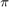
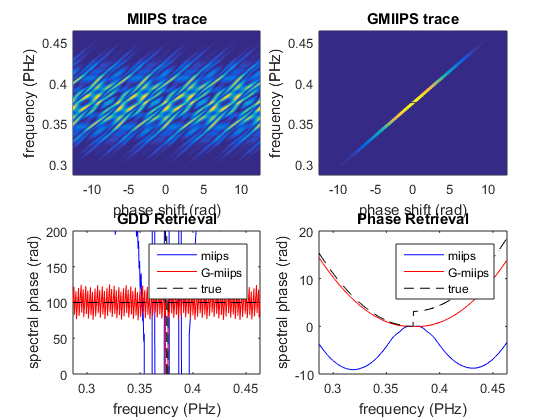

Simulation of Gmiips with a  step in the spectral phase
Phase steps are hard to retrieve using frequency domain techniques, such as MIIPS. Here we compare MIIPS and G-MIIPS with respect to their ability of coping with a step in the spectral phase.
G-MIIPS does retrieve the GDD, but neither G-MIIPS nor MIIPS can retrieve the phase in one iteration.
Note that, also for G-MIIPS, the retrieved phase is dependent on the modulation parameters. The reason is that the phase step introduces a gap in the trace, where the GDD cannot be retrieved. When the GDD is numerically integrated, the missing information can result into two different linear offsets for frequencies lower and higher than the step.
Contents
Set up chirped Gaussian pulse with phase step
p = gaussianPulse('f0',300/800, 'fwhm', 5, 'units', 'fs', 'dt', 0.5, ... 'nPoints',2^12); GDD = 100; % fs^2 p.polynomialPhase([GDD 0 0 ]) % adding a phase step at the central frequency of the pulse p.spectralPhase = p.spectralPhase + ... pi * (p.frequencyArray>p.centralFrequency);
Simulate Gmiips
maxGDD = 1000; tau = 20; amp = maxGDD/tau^2; phasesteps = linspace(-4*pi, 4*pi, 500); % simulate standard miips m = Gmiips(p, amp, tau, phasesteps, 'gateWidth', []); m.notes = 'MIIPS'; % simulate Gmiips mg = Gmiips(p, amp, tau, phasesteps, 'gateWidth', 0.1); mg.notes = 'GMIIPS';
Warning: Time window (1/frequencyStep == 2048.00 fs) appears narrow. It might be useful to decrease the frequencyStep. Warning: Time window (1/frequencyStep == 2048.00 fs) appears narrow. It might be useful to decrease the frequencyStep.
Plot MIIPS and G-MIIPS traces
Both MIIPS and G-MIIPS fail to accurately retrieved the spectral phase, especially the step.
figure(1) subplot(2,2,1) pcolor(m.phaseArray, m.frequencyArray, m.trace); shading flat ylim([-1,1]*p.bandwidth+p.centralFrequency) xlabel('phase shift (rad)') ylabel(['frequency (', p.frequencyUnits, ')']) title([m.notes, ' trace']) subplot(2,2,2) pcolor(mg.phaseArray, mg.frequencyArray, mg.trace); shading flat ylim([-1,1]*p.bandwidth+p.centralFrequency) xlabel('phase shift (rad)') ylabel(['frequency (', p.frequencyUnits, ')']) title([mg.notes, ' trace']) subplot(2,2,3) plot(p.frequencyArray, m.retrievedGDD, 'b', ... p.frequencyArray, mg.retrievedGDD, 'r', ... p.frequencyArray, p.groupDelayDispersion, 'k--'); legend('miips', 'G-miips', 'true') xlim([-1,1]*p.bandwidth+p.centralFrequency) ylim([0 2*GDD]) xlabel(['frequency (', p.frequencyUnits, ')']) ylabel('spectral phase (rad)') title('GDD Retrieval') subplot(2,2,4) plot(p.frequencyArray, m.retrievedPhase, 'b', ... p.frequencyArray, mg.retrievedPhase, 'r', ... p.frequencyArray, p.spectralPhase, 'k--'); legend('miips', 'G-miips', 'true') xlim([-1,1]*p.bandwidth+p.centralFrequency) xlabel(['frequency (', p.frequencyUnits, ')']) ylabel('spectral phase (rad)') title('Phase Retrieval')